A study app for medical students and doctors: more than 9,400 MBBS, BDS, FCPS Part 1 and PGMI questions, each with a full explanation for every option, Ask Avicenna to explain anything you are stuck on, flashcards, your own library and research guidance, in one place.
Made in Pakistan by Dr. Owais Nawaz Khan.
Everything works on your phone, tablet or computer, and your work stays on your own device.
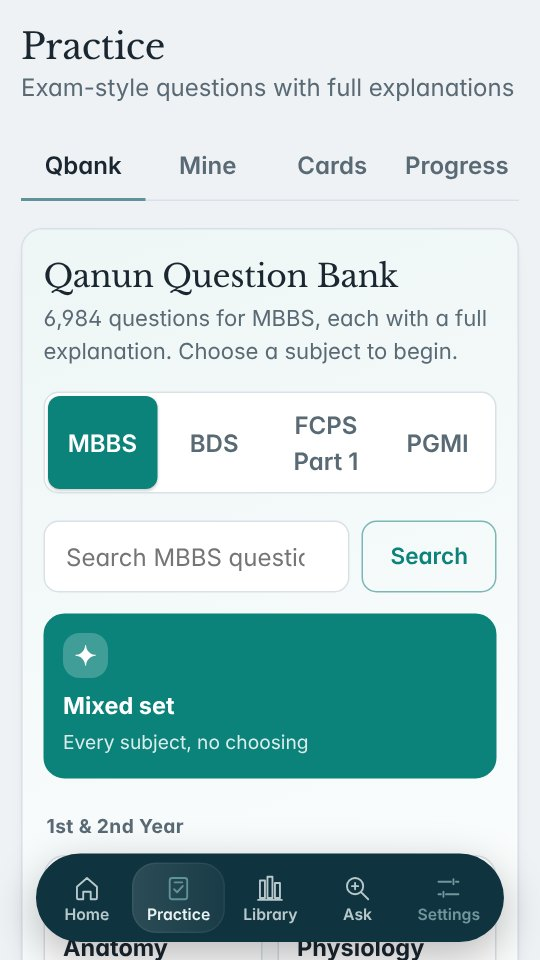
Original questions for every MBBS year, FCPS Part 1 and the PGMI entrance test, from easy to extreme. Clinical vignettes give real lab values with reference ranges, set in hospitals and towns across Pakistan. Pick a subject, keep the chapters you need, and start.
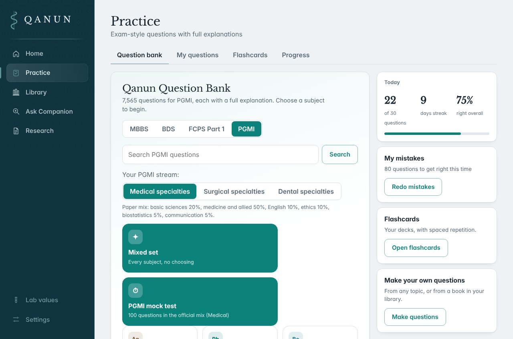
Prepare for the PGMI test for residency in Khyber Pakhtunkhwa. Choose the medical, surgical or dental stream and take 100-question mock tests in the official mix: applied basic sciences, your clinical stream, English, bioethics, biostatistics and communication skills.
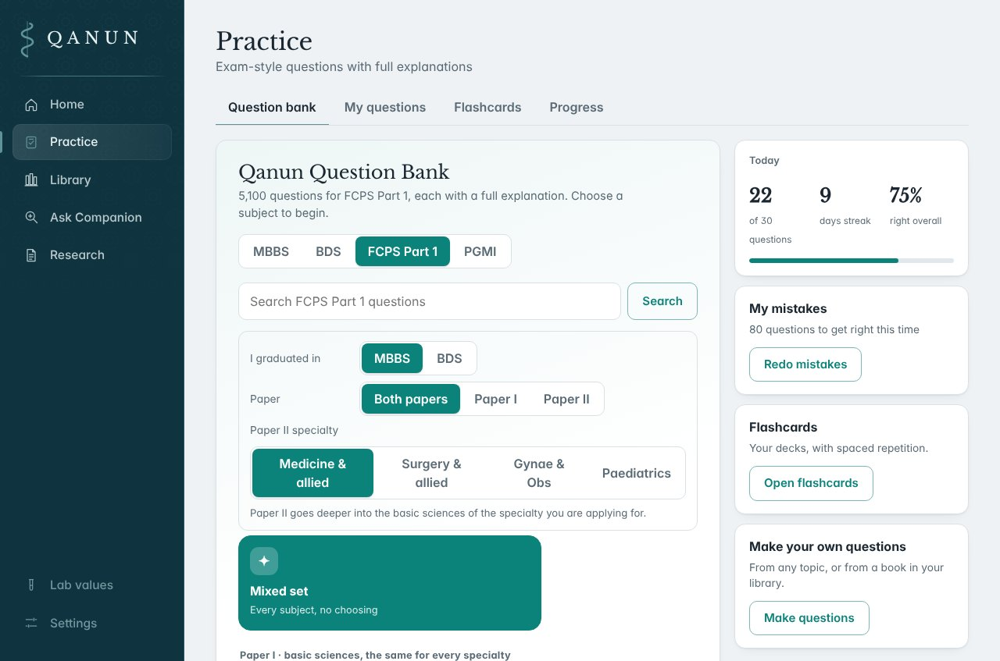
Paper I for every specialty, and Paper II for medicine and allied, surgery and allied, obstetrics and gynaecology, paediatrics and dentistry. Practise one paper at a time, chapter by chapter, with an explanation for every option.
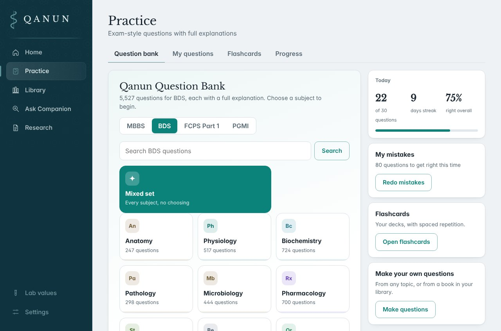
Every BDS subject for KMU and UHS, from 1st year to the final year: oral biology, dental materials and the basic sciences; oral pathology, periodontology, oral medicine, community dentistry and dental pharmacology; and operative dentistry, oral and maxillofacial surgery, prosthodontics and orthodontics. Dentists are reviewing the questions.
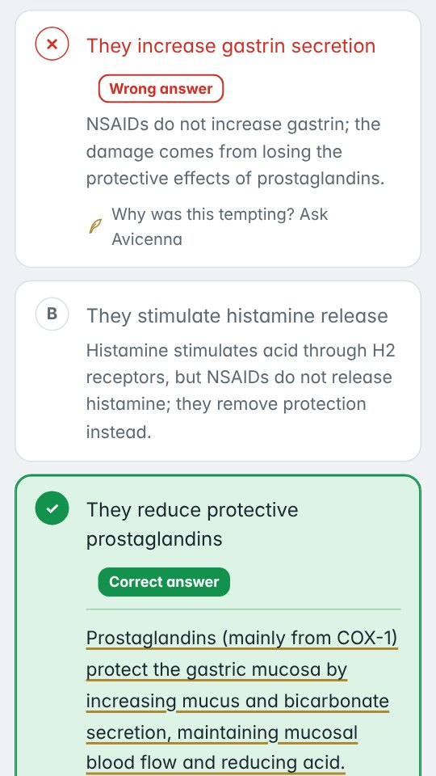
Not just the right answer: each wrong option says why it does not fit this patient. Key clues in the stem are underlined, terms have short notes with pictures, and many questions carry comparison tables, ECGs and figures.
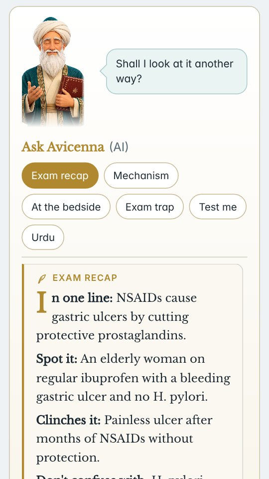
Stuck on a question? Ask Avicenna. Qanun's guide opens his book and answers beside the question: the mechanism behind it, how it looks at the bedside, the exam trap, a quick test of what you learned, or the same explanation in Urdu. Highlight any phrase in an explanation to ask about it, or type your own question. He never pops up uninvited; he is there when you want him. On the free questions his answers are ready instantly; with a Student or Clinician plan he answers on every question and takes your own questions.
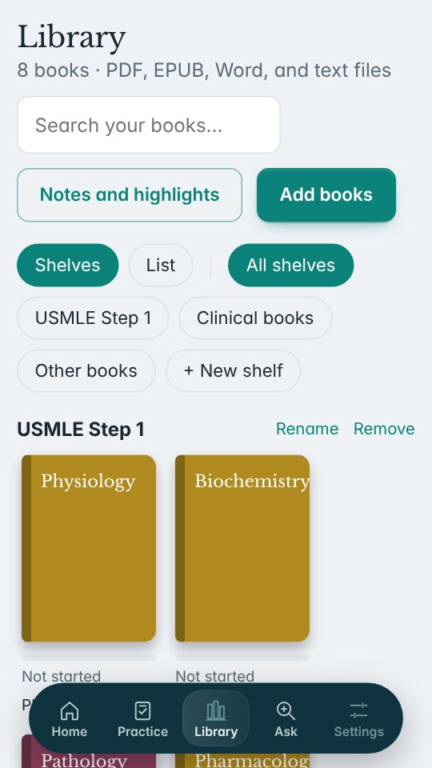
Read the PDF, EPUB and Word books you already have, with highlights and notes. Turn highlights into flashcards with spaced repetition, or import your Anki decks.
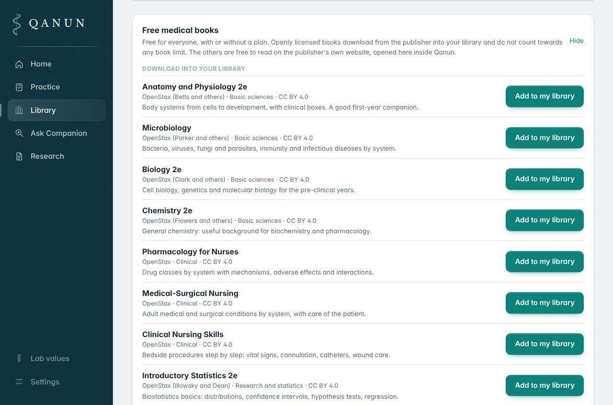
Openly licensed textbooks from OpenStax, such as Anatomy and Physiology, Microbiology and Pharmacology, download into your library with one click. Classics such as Clinical Methods, StatPearls and WHO guidance open on the publisher's own website inside Qanun. Free with or without a plan: in Qanun for Windows now, coming to the phone app.
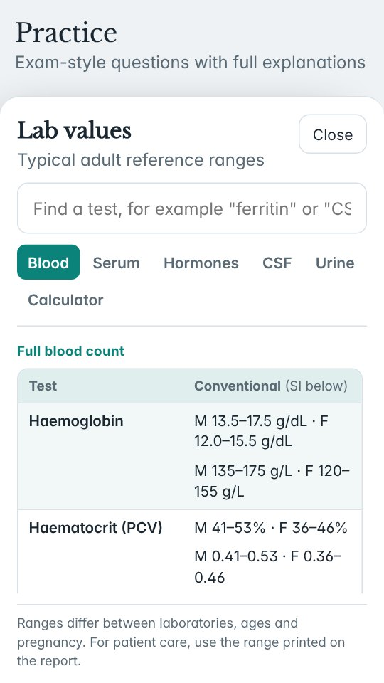
Reference ranges in conventional and SI units, bedside formulas, and a companion that answers from your books, current guidelines and PubMed.
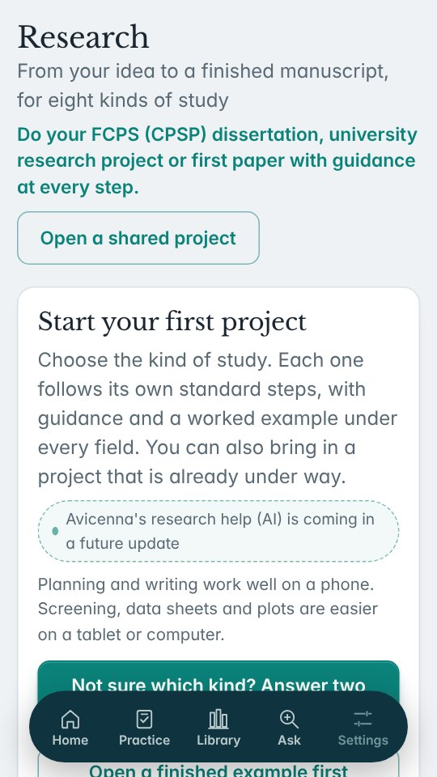
Eight kinds of study, from a case report to a systematic review, each with its own steps, guidance and a worked example for every field, ending in a manuscript.
MBBS from first year to final, BDS, FCPS Part 1 and the PGMI entrance test for residency in Khyber Pakhtunkhwa. Questions in the bank today; new ones arrive with each update.
9,489 questions in all, as of 20 November 2026.
The same Qanun everywhere, laid out for the screen you are using. Your questions, books and notes stay on your own device.
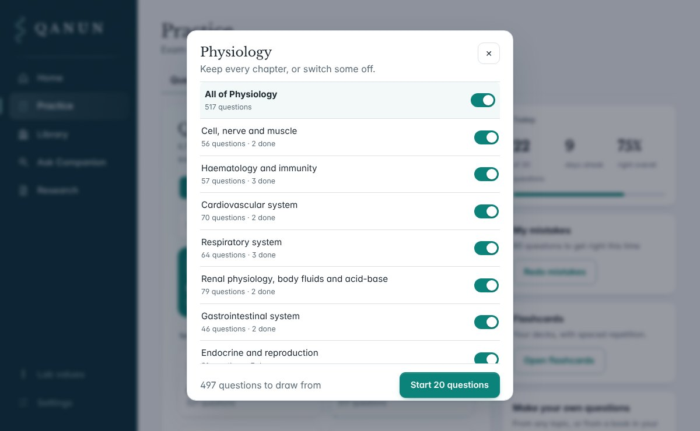
Open a subject, keep the chapters you need and switch off the rest, then start a set of 10, 20 or 40. The wide layout puts your progress and your mistakes beside the bank.
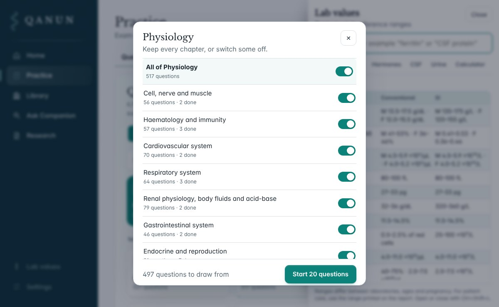
Reference ranges in conventional and SI units slide in over any screen, with a bedside calculator and the formulas you use on the ward.
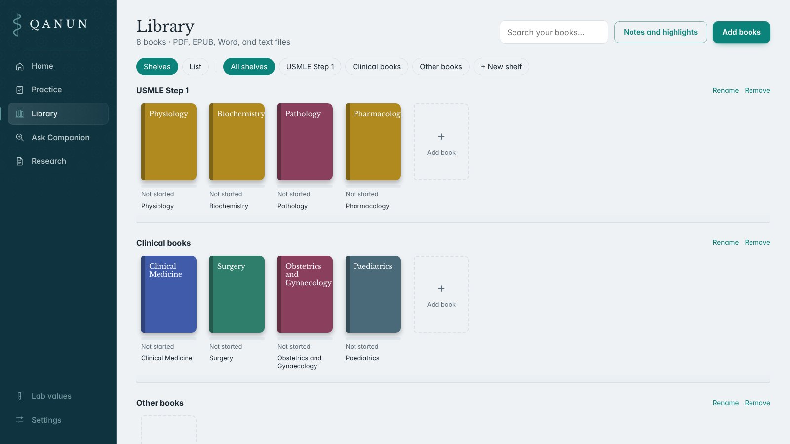
Your PDF, EPUB and Word books, sorted onto shelves you name, with highlights, notes and a reader built for long sessions.
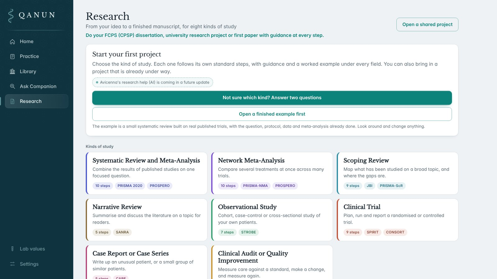
Eight kinds of study, each broken into its own standard steps, with guidance and a worked example for every field.
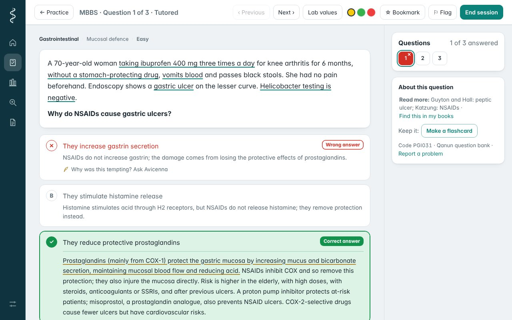
Qanun is free to use every day. A plan opens the whole question bank and removes the daily limits.
Prices are for Pakistan; the pricing page shows the price for your country and compares every feature. Renewing a yearly plan costs 30% less. In the Android app, plans are sold through Google Play.
Choose your device on the download page. To buy a plan, write to us:
For study only. Qanun is a learning tool. It is not a medical device and does not give advice about any patient. Never enter patient names or other identifying details.